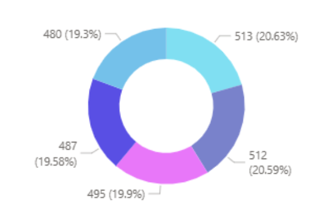
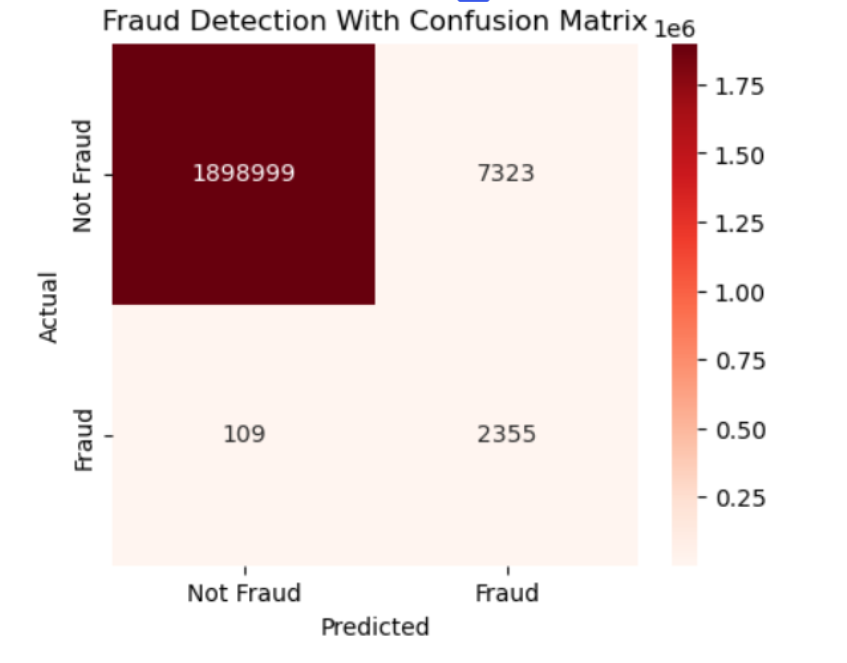
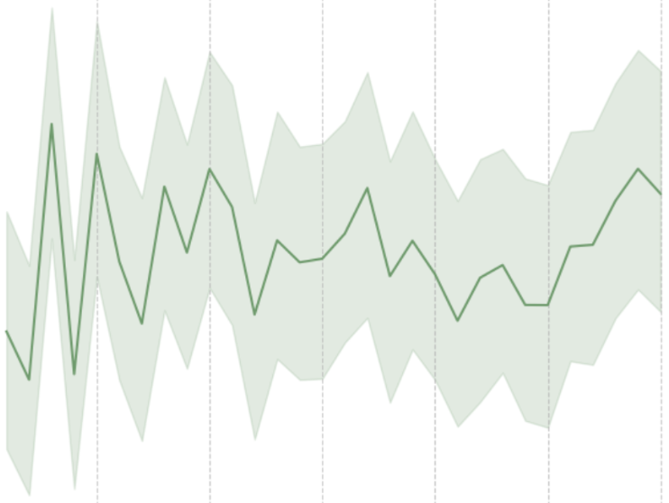

Hi! I'm Alana
Computer Science graduate with a drive to connect, innovate, and prosper.
Let's Connect! →----------------♡----------------
About Me
🎓 B.S. in Computer Science | Data Science Concentration
I'm a computer science graduate from UNC Charlotte with a passion for transforming raw data into lively and visually engaging presentations. Graduating with high honors and a focus in data science, I enjoy collaboration, bringing ideas to life, and finding easier ways to make information quicker to understand. My experience includes working with HTML, Python, SQL, and more.
Through participating in hackathons, HAVK, and academic projects, I've had the opportunity to collaborate with others, analyze synthetic data mimicking real-world trends, and present my findings in a more accessible perspective. These experiences sparked my passion for both creating and sharing insightful work.
I'm especially interested in opportunities related to data science, gaming, and biotechnology. I look forward to expanding my skills, facing new challenges, and connecting with people who enjoy the journey of learning together.
----------------♡----------------
Featured Works

Trend Analysis in Healthcare
An interactive dashboard built through PowerBI that serves as an exploration tool for viewing patient demographics, billing amounts, and more.

Fraud Detection Analysis
An evaluation of how well the Random forest classification model can distinguish between fraudulent transactions through Python.

Subscription Churn Predictions
An extensive data analysis of the machine classification model Gradient Boosting determining the likelihood of whether a user discontinues their subscription through Python.